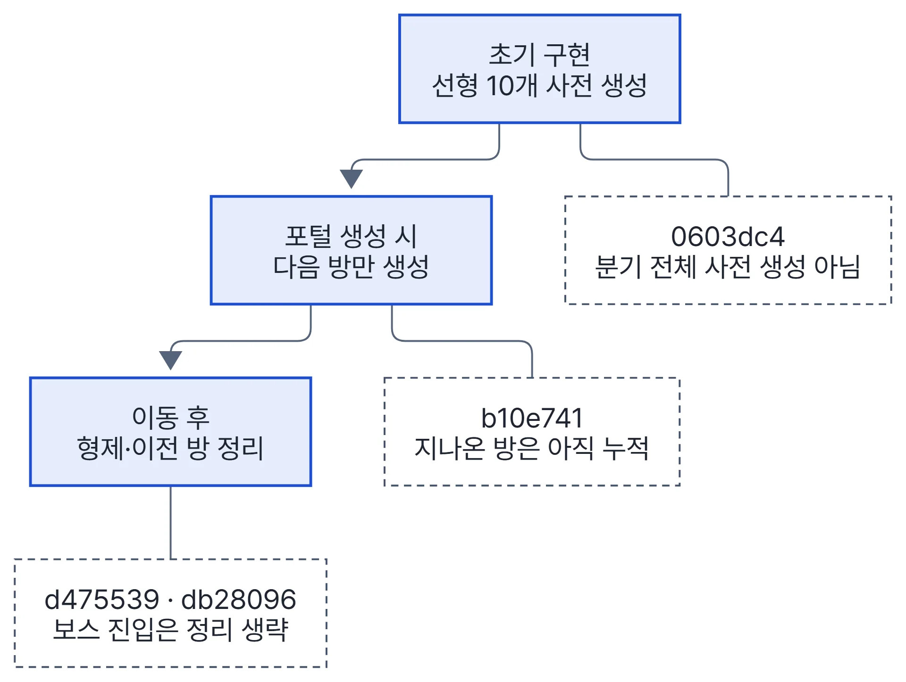
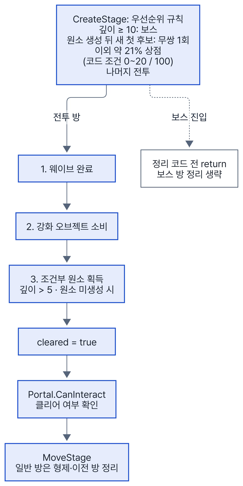
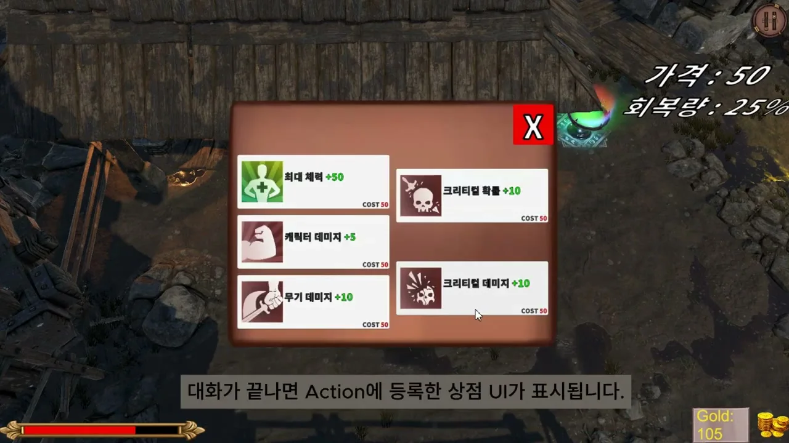
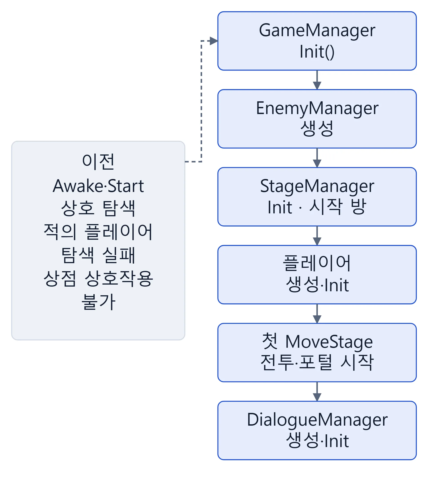
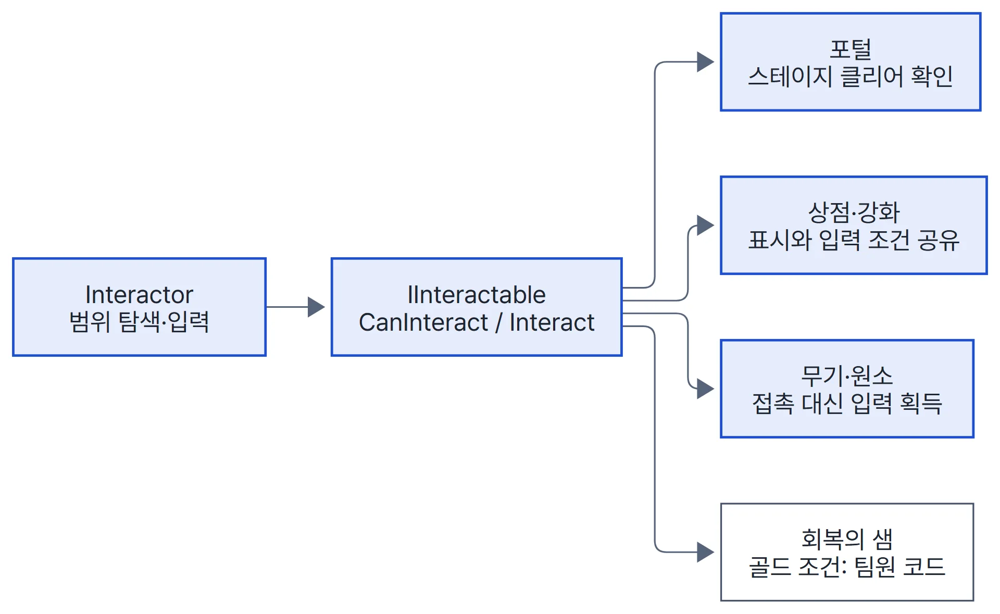

프로젝트 2Unity 3D 로그라이트 액션3인 팀
DARK SHIELD
분기 포털 스테이지의 생성·정리와 클리어 조건을 만들고, 팀장으로서 세 사람이 만든 매니저를 한 초기화 순서로 묶었습니다.

1 분기 포털을 만들 때 다음 방만 생성하고, 이동 뒤 지나온 방 정리
- 문제
- 첫 구조는 분기 없이 선형 방 10개를 시작할 때 모두 만들었습니다. 포털마다 다음 방이 갈라지면 미리 만들 방이 깊이에 따라 곱으로 늘 것으로 봤습니다.
- 제약
- 씬 전환 없이 한 씬에 방 프리팹을 늘어놓는 구조였고, 포털 색으로 다음 방 종류를 이동 전에 보여 줘야 했습니다.
- 판단
- 포털 색으로 다음 방을 미리 보여 주려면 후보 방은 있어야 했습니다. 그래서 후보 방만 만들고 이동 뒤 필요 없는 방을 지우는 쪽으로 두 번에 걸쳐 바꿨습니다.
- 구현
- 부모 1개·자식 N개 노드로 바꿔, 선택한 방으로 현재 노드를 옮긴 뒤 형제 방과 이전 방을 지웁니다. 보스 방은 진입 분기가 먼저 반환해 정리를 건너뜁니다. 관련 코드 StageManager.cs L93–128 · Portal.cs L21–33 · 변경 커밋 b10e741 · d475539 · db28096
- 결과
- 일반 방으로 이동할 때마다 다음 후보를 만들고, 고르지 않은 방과 지나온 방의 GameObject를 지웁니다.


| 커밋 순서 | 방식 | 남은 한계 |
|---|---|---|
| ① 0603dc4 | 선형 10개 사전 생성 | 분기를 넣으면 생성량 증가 예상 |
| ② b10e741 | 포털을 만들 때 그 포털의 다음 방 1개만 생성 | 지나온 방이 계속 쌓임 |
| ③ d475539 (최종) | 이동 뒤 형제 방·이전 방 삭제 | 보스 방 진입 때는 정리 생략 |
DARK SHIELD사례 2·3본인 구현·팀장 통합
2 포털은 묻기만 하고, 클리어 조건은 스테이지가 판단
- 문제
- 적이 남았거나 강화 보상을 받기 전에 다음 방으로 넘어가면 안 됐습니다. 조건은 방마다 달랐습니다(전투는 웨이브·강화, 런 후반 첫 전투는 원소까지, 상점은 즉시, 보스는 포털 없음).
- 구현
- 포털에
event Func<bool>를 두고 포털을 만든 스테이지가 조건을 등록합니다. 전투 방은 코루틴 하나로 웨이브 완료 → 강화 오브젝트 소비를 기다리고, 런 후반의 첫 전투 방에서는 원소 획득까지 기다립니다. E 표시와 입력이 같은CanInteract()를 써서, 열리지 않은 포털에는 E 표시도 뜨지 않습니다. 관련 코드 Stage.cs L30–40 · BattleStage.cs L19–46 · Interactor.cs L27–58 · 변경 커밋 d0269b4 · fc163ae - 결과
- 적이 남았거나 강화 오브젝트를 쓰기 전에는 포털 E 표시가 뜨지 않고 이동도 막힙니다(적 잔존 시 표시 수정 fc163ae). 포털 프리팹은 모든 방이 하나를 같이 씁니다.


3 세 사람이 만든 매니저의 초기화 순서를 GameManager 한곳으로
- 문제
- 세 사람이 따로 만든 매니저가 Awake·Start에서 서로를 찾아, 실행 순서에 따라 적이 플레이어를 못 찾거나 상점 상호작용이 되지 않았습니다.
- 원인
- 마감 직전에 팀원 기능을 합치면서 플레이어가 씬 배치에서 런타임 생성으로 바뀌었고, 초기화 순서를 정하는 곳이 없었습니다.
- 판단
- StageManager의 개별 싱글톤을 없애고, 흩어진 초기화를 public
Init()으로 바꿔 GameManager가 순서대로 부르게 했습니다. - 구현
- EnemyManager 생성 → StageManager.Init → 플레이어 생성·Init → 첫 방 이동 → DialogueManager.Init. 팀원 코드에서 원거리 적의 투사체가 다른 적의 풀로 돌아가던 연결 버그도 고쳤습니다. 관련 코드 GameManager.cs L25–46 · 변경 커밋 싱글톤 제거 99f664e · 6c308eb · 1e34707 · 4d11ffd · 풀 연결 수정 688aa8c
- 결과
- 두 증상을 초기화 순서 고정으로 고쳤습니다. 대신 GameManager가 게임 상태·골드·스폰 데이터까지 가진 큰 클래스가 됐습니다.




DARK SHIELD에서 함께 맡은 일
| 한 일 | 근거 |
|---|---|
| 웨이브 구성(적 프리팹·수·간격)을 ScriptableObject로 분리하고, 생성과 생존 관리를 다른 클래스로 나눔 | EnemySpawnData.cs · a8347a5 |
| 포털·상점·강화·무기·원소를 공통 상호작용 규약으로 묶고, 닿으면 줍던 무기·원소를 E 키 입력으로 전환 | Interactor.cs L27–46 · f20e73f |
| 상인 대화가 끝나면 콜백으로 상점을 열고, UI가 떠 있는 동안 입력 액션 맵을 UI로 전환 | DialogueManager.cs L27–57 · 5cea1a3 |
| 팀장으로 이슈 번호 브랜치와 PR 흐름을 운영하고 develop 병합에 참여 | — |

